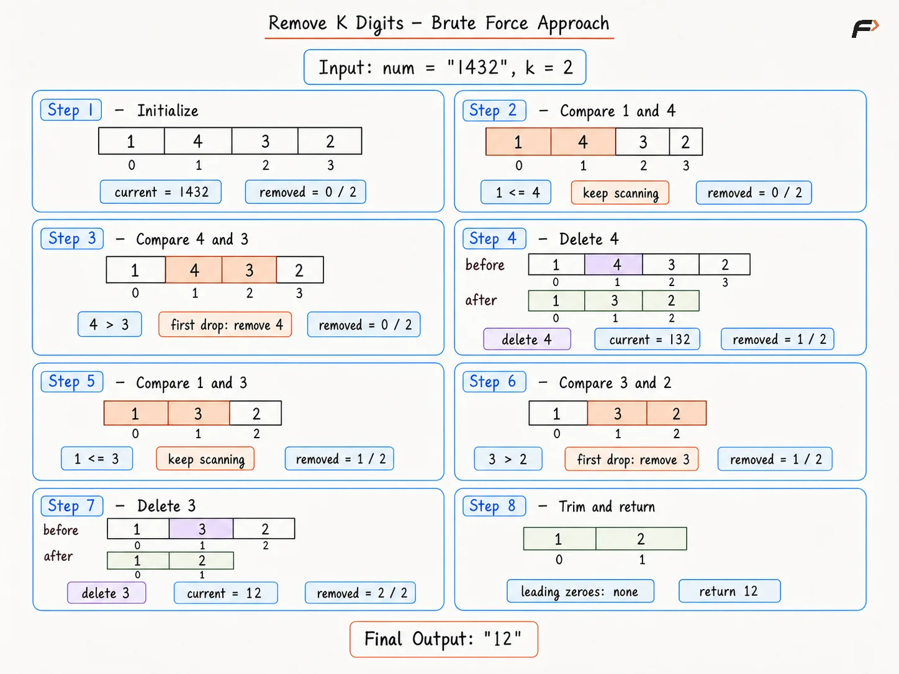
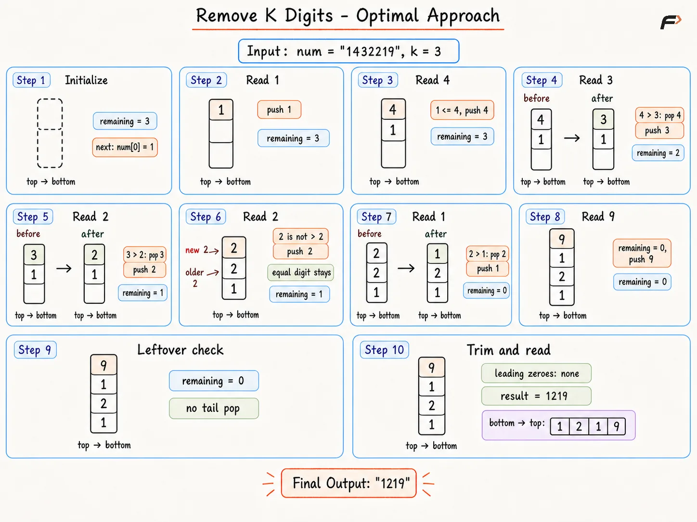

Remove K Digits to Form the Smallest Number
Given a string num representing a non-negative integer and an integer k, remove exactly k digits. Return the smallest possible integer as a string. Remove leading zeroes from the result. Return "0" when no digit remains or every retained digit is zero.
Example 1
Input: num = "1432219", k = 3
Output: "1219"
Explanation: Removing 4, 3, and the first available 2 before 1 produces the smallest retained sequence, 1219.
Example 2
Input: num = "10", k = 2
Output: "0"
Explanation: Removing both digits leaves an empty string, so the required result is "0".
Brute Force Approach
Digits on the left have a greater effect on the number. Therefore, removing the first digit that is larger than the next digit gives the smallest possible result for one deletion, because a smaller digit moves into an earlier position.
If no such pair exists, the digits are already in non-decreasing order. In that case, removing the last digit gives the smallest result. Repeating this process k times provides a simple direct solution, although repeated scanning can be slow.
Algorithm
Store
numin a working string calledcurrent, because every deletion changes the active number.Repeat the deletion process exactly
ktimes, because exactlykdigits must be removed.Scan adjacent digits from left to right to find the first position where the current digit is greater than the next digit.
Remove the larger left digit from that pair, because reducing the earliest possible position creates a smaller number.
If no decreasing pair is found, remove the last digit, because the digits are already in non-decreasing order.
After all deletions, skip leading zeroes because unnecessary zeroes should not appear in the final answer.
Return the remaining part of the string, or return
"0"when no non-zero digit remains.
Dry Run

Remove K Digits Brute
Solution
#include <bits/stdc++.h>
using namespace std;
class Solution {
public:
// Returns the smallest number after k removals
string removeKdigits(string num, int k) {
// Store the changing number
string current = num;
// Perform every required deletion
for (int removal = 0; removal < k; removal++) {
// Default to last index if no valid removal index is found.
int removeIndex = current.size() - 1;
// Find the earliest decreasing pair
for (int index = 0; index + 1 < current.size(); index++) {
// An earlier smaller digit lowers the result
if (current[index] > current[index + 1]) {
removeIndex = index;
break;
}
}
// Delete the selected digit
current.erase(removeIndex, 1);
}
int start = 0;
// Skip zeroes invalid at the front
while (start < current.size() && current[start] == '0') {
start++;
}
// An empty suffix represents zero
if (start == current.size()) {
return "0";
}
// Return the valid suffix
return current.substr(start);
}
};
// Driver code
int main() {
string num = "1432219";
int k = 3;
Solution obj;
cout << obj.removeKdigits(num, k);
return 0;
}Complexity Analysis
Time Complexity: O(N × k), because every deletion can scan and rebuild a string containing up to N digits.
Space Complexity: O(N), because immutable-string languages create a rebuilt string and the active result can contain up to N digits.
Optimal Approach
Repeatedly scanning the number checks the same digits many times. A monotonic stack avoids this by storing the useful digits in their original order and keeping the latest retained digit at the top.
When the current digit is smaller than the stack top, removing the larger top places a smaller digit in an earlier position and reduces the number. After the full scan, any remaining deletions are made from the end because the retained digits are already in non-decreasing order.
Algorithm
Create an empty stack and set
remaining = kto track how many digits still need to be removed.Traverse every digit from left to right, so the order of the retained digits remains unchanged.
While
remaining > 0and the stack top is greater than the current digit:Remove the stack top because deleting an earlier larger digit creates a smaller number.
Decrement
remainingbecause one allowed deletion has been used.
Push the current digit after all useful removals, so the digit can be compared with future digits.
After traversal, remove digits from the stack end while
remaining > 0, because a non-decreasing sequence becomes smallest by deleting trailing digits.Remove leading zeroes only after completing all
kdeletions, so zero removal does not affect the deletion choices.Return the remaining number, or return
"0"when no digit remains.
Dry Run

Remove K Digits Optimal
Solution
#include <bits/stdc++.h>
using namespace std;
class Solution {
public:
// Returns the smallest number after k removals.
string removeKdigits(string num, int k) {
stack<char> digits;
int remaining = k;
// Process every digit from left to right.
for (char digit : num) {
// Remove larger previous digits to make the number smaller.
while (remaining > 0 && !digits.empty() &&
digits.top() > digit) {
digits.pop();
remaining--;
}
// Retain the current digit for future comparisons.
digits.push(digit);
}
// A non-decreasing sequence needs removals from the end.
while (remaining > 0 && !digits.empty()) {
digits.pop();
remaining--;
}
string result;
// Stack order is reversed, so collect digits first.
while (!digits.empty()) {
result.push_back(digits.top());
digits.pop();
}
reverse(result.begin(), result.end());
int start = 0;
// Skip leading zeroes from the final number.
while (start < result.size() && result[start] == '0') {
start++;
}
// No remaining digit represents zero.
if (start == result.size()) {
return "0";
}
return result.substr(start);
}
};
// Driver code
int main() {
string num = "1432219";
int k = 3;
Solution obj;
cout << obj.removeKdigits(num, k);
return 0;
}Complexity Analysis
Time Complexity: O(N), because every digit is pushed once and popped at most once across the complete scan.
Space Complexity: O(N), because the character stack can retain up to N digits.
Interview follow-up Questions
A larger digit in an earlier position has a greater effect on the final number. Removing the larger previous digit allows the smaller current digit to move into a more significant position, producing a smaller result.